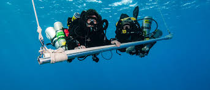
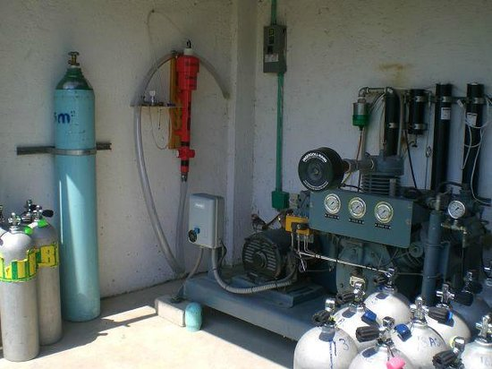
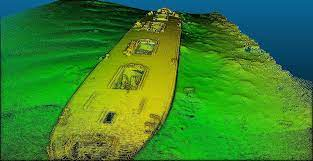
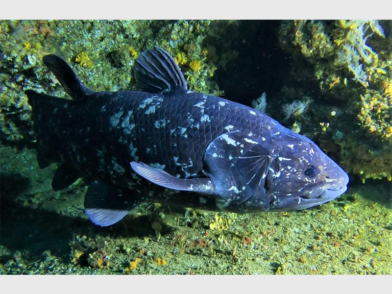

Wreckless Marine
Ocean Exploration
About Us
We are a marine research organisation based in Cape Town, South Africa. Our areas of expertise include technical diving, seafloor visualisation using a multibeam echosounder, and citizen science.

Commercial Services
We offer a range of specialised marine services.
Technical Diving
Our divers have a vast knowledge of local reefs and wrecks. We are all IANTD qualified and have many years of mixed gas diving experience.
Gas Blending
Our on-site filling station enables us to blend both Nitrox and Trimix.
Multibeam Echosounder
Our R2Sonic 2026 MBES is a state of the art machine that enables us to achieve high resolution seafloor visualisation.
Citizen Science
The Coelacanth Mission
We have already made exciting discoveries about the Coelacanth population off the South African coastline. It is a mission of ours to use our technical diving capabalities as well as our R2Sonic MBES to seek out new Coelacanth habitat and find new populations of this unique fish.
Wreckless Marine Divers Find Coelacanth